The file the next designer inherits.
Hirehoot were about to hire their first designer — a junior — who would arrive to an empty file and a product with no visual logic. My job was to get there first: build the system, decide how the brand behaves inside the product, and draw the hard flows as real screens, so the next person had somewhere to start from instead of a blank canvas.
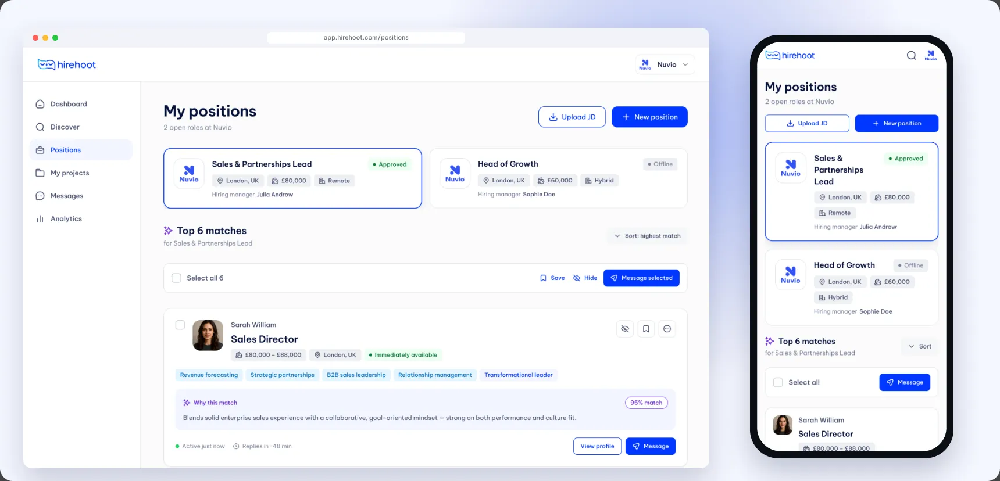
Tokens, variants and every state specified before the screens, so screens became assembly.
A drafting wizard that keeps the seam between the manager's words and the model's visible.
Came back a year later and audited my own file: three blues into one, 14 radii into 6, variables where there were none.
Designing for the designer who isn't hired yet
Most handover work is written for engineers. This one had a second audience: someone junior, arriving in a few months, who would own the product with nobody senior to ask. The file had to answer questions before they were asked, and every pattern in it had to be followable without me in the room.
So the deliverable was a baseline rather than a set of screens: the system underneath, how the brand behaves inside an interface, and the flows that were genuinely hard to get right — the AI ones — drawn out in full.
The system first, so the screens become assembly
Colour is a token ramp with named steps, opacities and gradients rather than a swatch grid. Buttons are matrixed across four types, four sizes and five content types, loading and disabled included. Inputs carry focus, filled, error and disabled states, type runs from display to caption across seven weights, and the icon library was complete before anyone needed it.
The first three screens took far longer than they would have otherwise — uncomfortable in week two of a two-month engagement. It pays back the moment a second person touches the file.
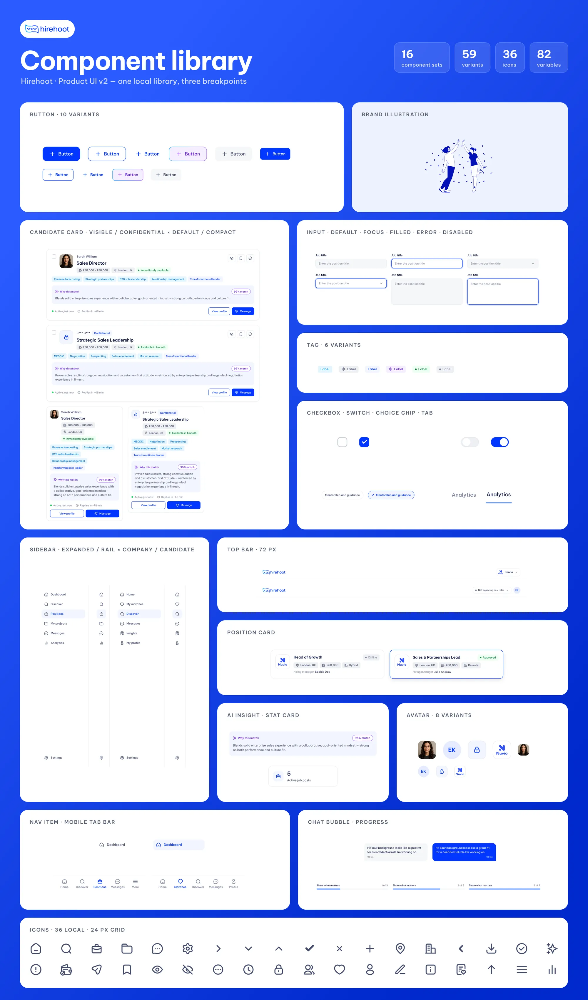
The wizard, not the button
Every competitor generates the whole job description in one pass. A one-shot generator produces text nobody owns: the manager can't defend it in a hiring meeting, and candidates can tell. So the wizard asks, drafts, and shows each suggestion where it can be accepted or overruled on its own — you can always see which sentence came from where.
An AI feature is an interaction, not a screen, and a team without a designer defaults to a text box and a button. Drawing the behaviour, undo included, is how the harder answer survived my leaving.
Slower than a button, on purpose: the manager has to be able to defend every sentence in the hiring meeting.
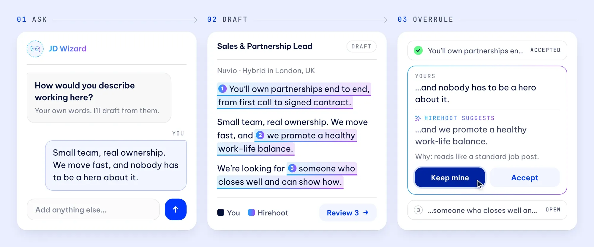
Two doors, one shell, one card
Candidates and companies enter through separate onboarding flows on one shared shell: one question per screen, a custom spot illustration on each, a visible progress state, the same footer and selection language. Layouts were checked at Turkish string lengths as well as English.
The candidate card covers three contexts with one component — the candidate's own view, the confidential view where name and photo stay locked until both sides sign an NDA, and the company view afterwards. In the file it is one set: Visible / Confidential × Default / Compact, so the next context is a variant, not a project.
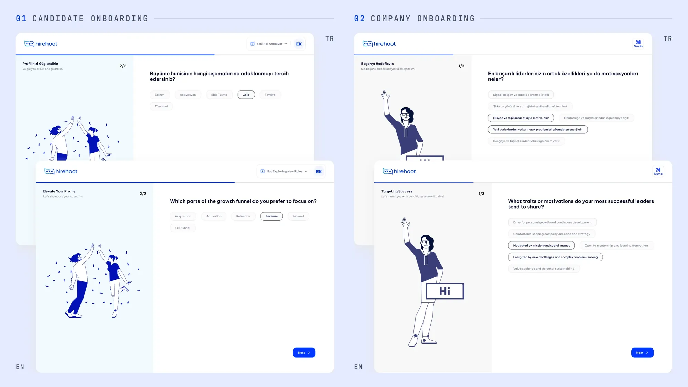
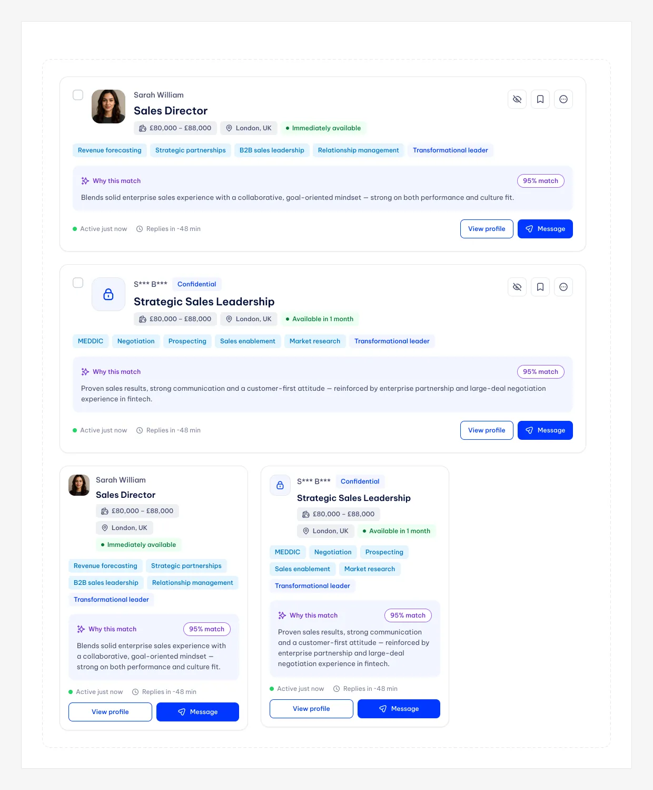
Auditing my own file, a year later
In 2026 I came back as the file's reviewer and found what every file collects once real screens land: three blues, radius drifting across 14 values, type at sizes like 13.15 px, and no variables at all.
The second pass fixed the system before the screens: 82 variables in three collections, primitives aliased by semantic tokens; one brand blue; six radius tokens; a fixed type ramp. Every AI score now sits beside a one-line reason, every company screen is drawn at three breakpoints — an 80 px rail on tablet, a header and tab bar on mobile — and the states a demo never shows are drawn too.
Colour now carries meaning: blue is the brand, and violet appears only when the AI is speaking.
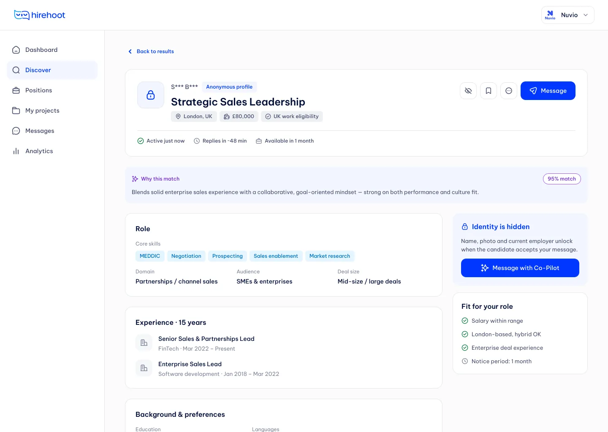
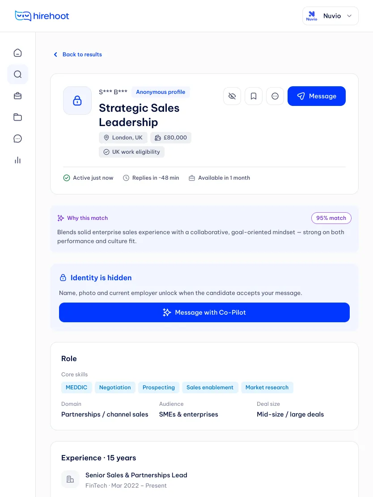
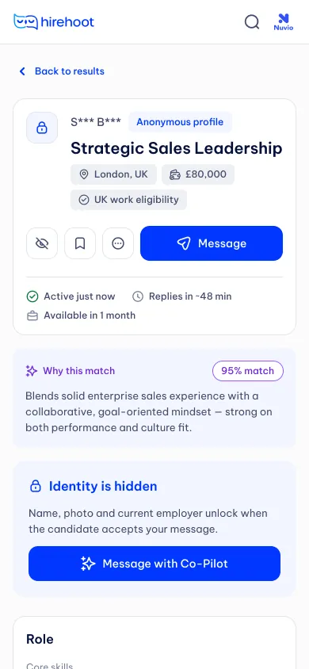
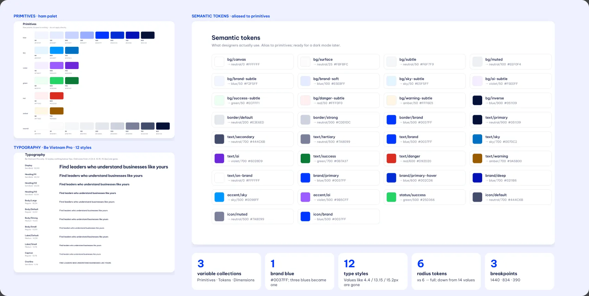
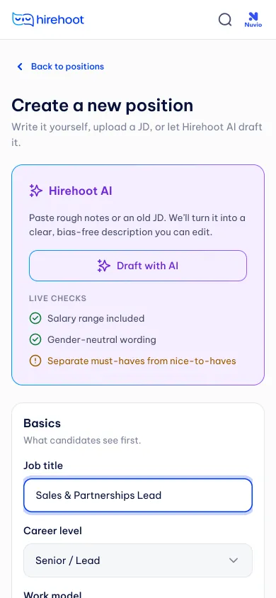
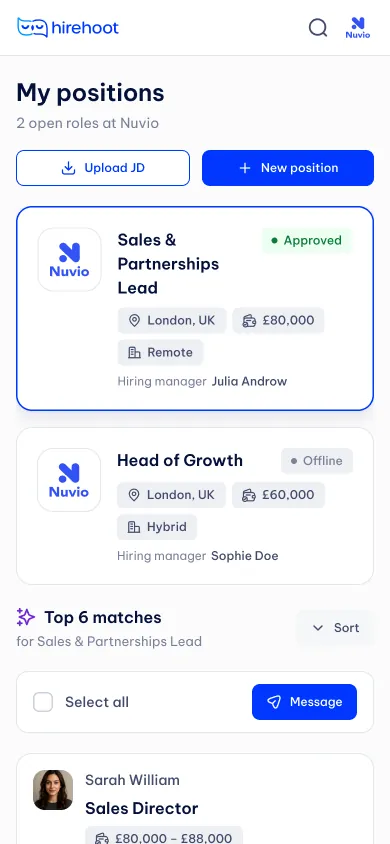
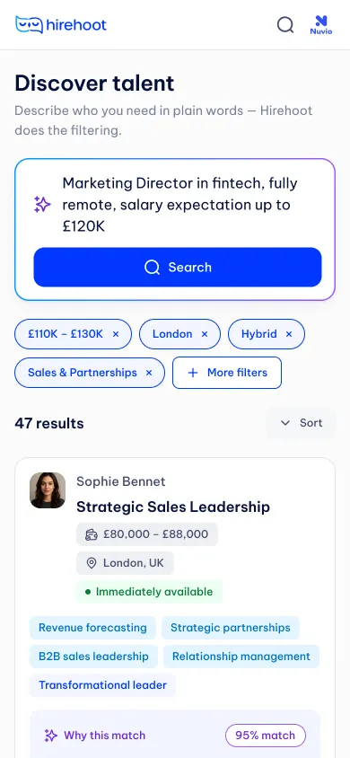
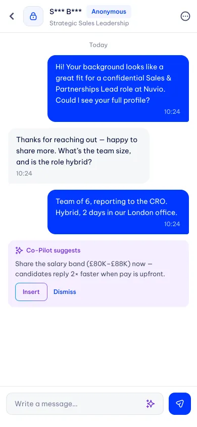
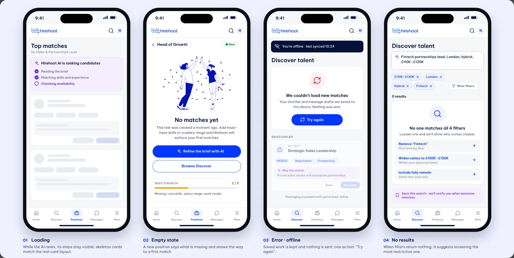
A file somebody else can keep building in.
Two months from brief to handover: a design system specified across its states, the brand resolved inside the interface, the AI interaction drawn out so its logic survives without me, and the core flows of both sides of the marketplace as real screens. The measure here is whether the next designer could pick it up.